Küchenbau
Individuelle Küchen vom Schreiner: zweiteilige Küchenblöcke mit lackierten Oberflächen, Küchen mit Holzfronten und verschiedenen Abdeckelementen – maßgenau eingepasst, auch unter Dachschrägen. Innen mit Vollauszügen und Getränkeauszug.
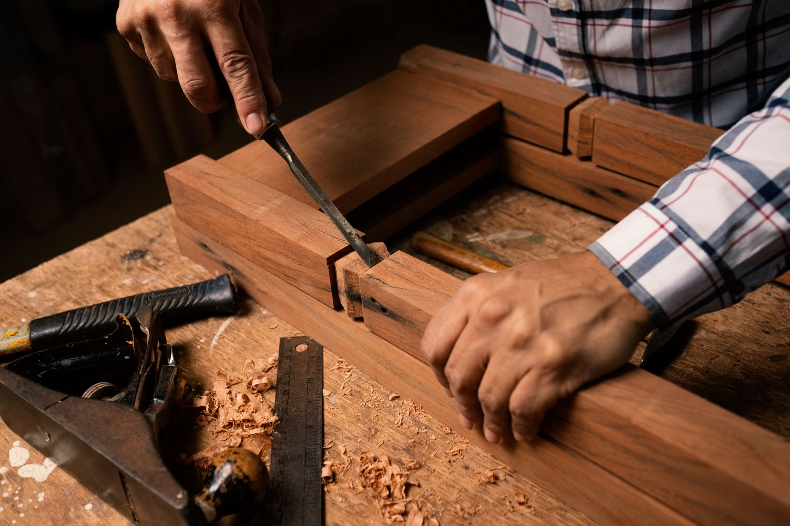
SchreinereimeisterbetriebQuierschied-Fischbach
Heiko Graber GdbR – Meisterbetrieb für Innenausbau und Möbelschreinerei im Gewerbegebiet Franziskaschacht in Quierschied-Fischbach bei Saarbrücken. Küchen, Einzelmöbel, Bad, Einbauschränke und Schiebetüren aus einer Werkstatt.
Leistungen
Vom Küchenblock bis zur Schiebetür: Wir planen und fertigen Möbel und Einbauten, die exakt zu Ihren Räumen passen – auch dort, wo Standardlösungen nicht hineinpassen.
Individuelle Küchen vom Schreiner: zweiteilige Küchenblöcke mit lackierten Oberflächen, Küchen mit Holzfronten und verschiedenen Abdeckelementen – maßgenau eingepasst, auch unter Dachschrägen. Innen mit Vollauszügen und Getränkeauszug.
Einzelmöbel aus Massivholz und Furnier: Wohnzimmertisch in zwei Holzarten, Esstisch mit eingelassenen, geätzten Glasplatten, Bett mit Beistelltisch und abnehmbarem Kopfteil. Jedes Stück ein Unikat.
Integrierte Schiebetüren mit eingelassener Führung, in die Wand eingebaute Schränke und Vitrinen-Nischen, Glas-Schiebeelemente – Innenausbau, der sich in die Architektur einfügt.
Maßgefertigte Waschtische, Spiegelschränke und Regale – abgestimmt auf Grundriss, Fenster und Material, damit das Bad wie aus einem Guss wirkt.
In Wände und Flure integrierte Einbauschränke, zum Beispiel ein Schuhschrank mit Glasschiebeelementen – Stauraum, der keinen Platz wegnimmt.
Rufen Sie uns an oder schreiben Sie uns – wir besprechen Maße, Material und Oberfläche gemeinsam.
Kontakt aufnehmen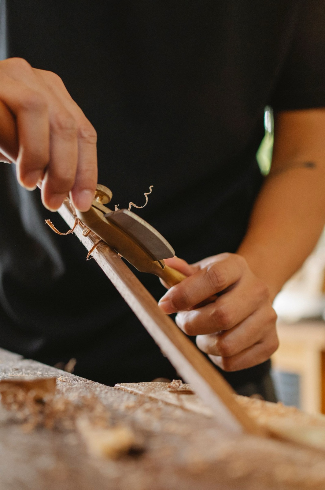
Referenzen
Ausgewählte Küchen, Möbel, Bad- und Innenausbau-Projekte aus unserer Werkstatt – jedes Stück geplant und gefertigt für genau diesen Ort.
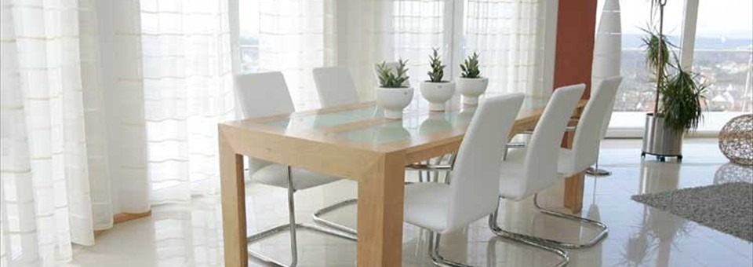
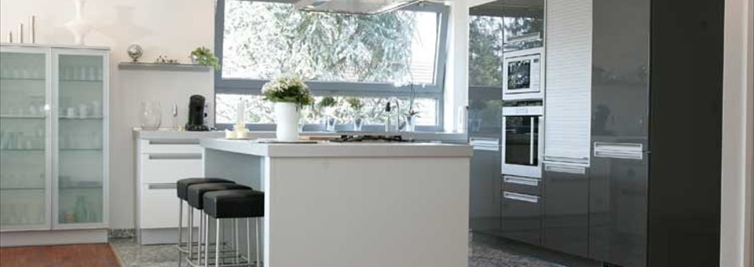
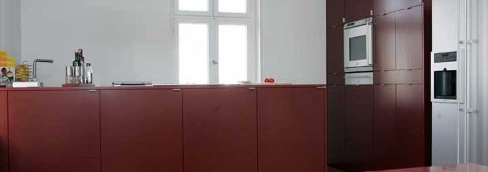
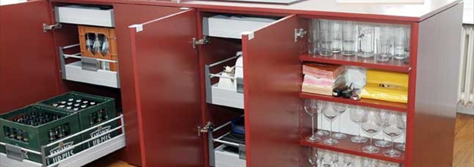
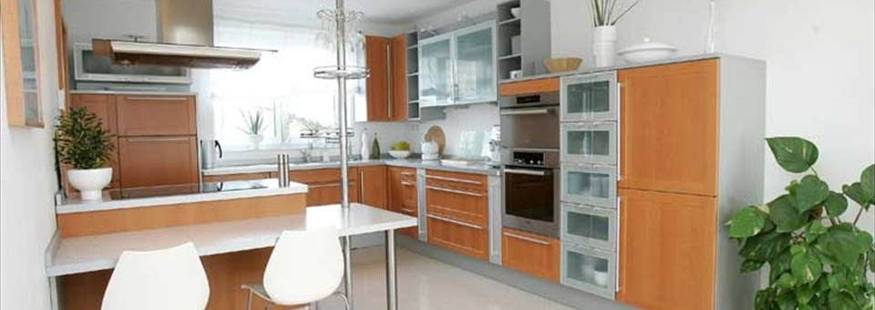
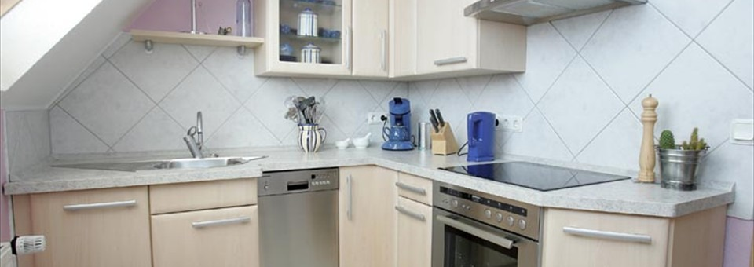
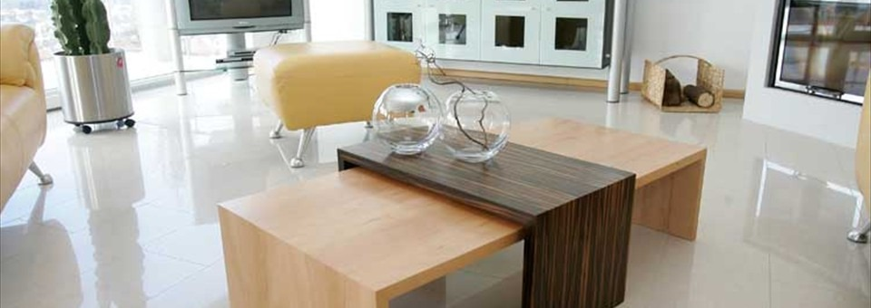
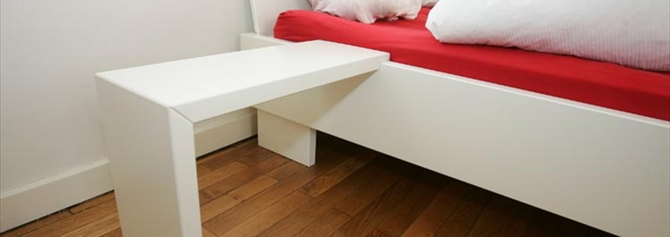
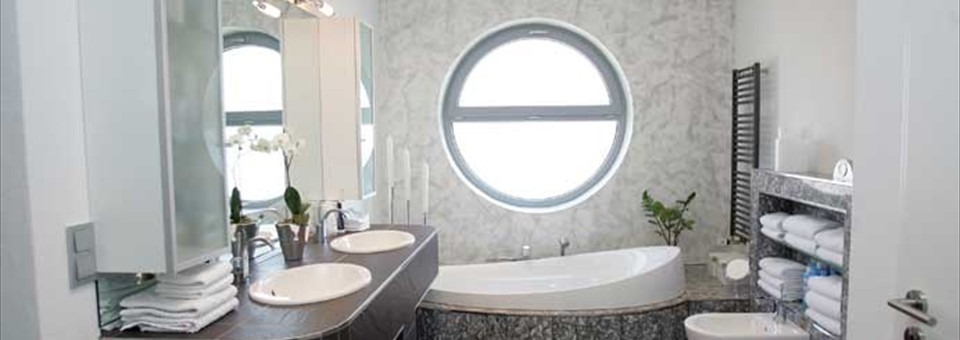
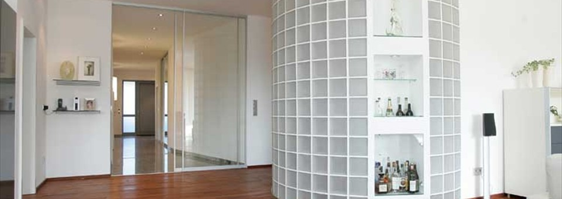
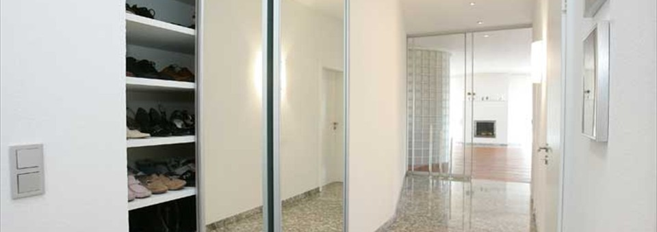
Alle Referenzfotos zeigen eigene Arbeiten der Heiko Graber GdbR. Weitere Projekte zeigen wir Ihnen gern persönlich.
Eigene Arbeiten: Schiebetür mit Vitrinen-Nischen, Wohnzimmertisch in zwei Holzarten.
Die Werkstatt
Die Heiko Graber GdbR ist ein Schreinereimeisterbetrieb mit zwei Schwerpunkten: Innenausbau und Möbelschreinerei. Die Werkstatt liegt im Gewerbegebiet Franziskaschacht in Quierschied-Fischbach bei Saarbrücken.
Unsere Referenzen zeigen, was uns ausmacht: lackierte Fronten in Schwarz oder Rot, die Kombination verschiedener Holzarten in einem Möbel, Glas als Gestaltungselement – und Maßanfertigungen für schwierige Räume, etwa eine Küche unter der Dachschräge oder ein Schrank, der in der Flurwand verschwindet.
Kontakt
Rufen Sie uns an, schreiben Sie eine E-Mail oder nutzen Sie das Anfrageformular – wir melden uns zurück.